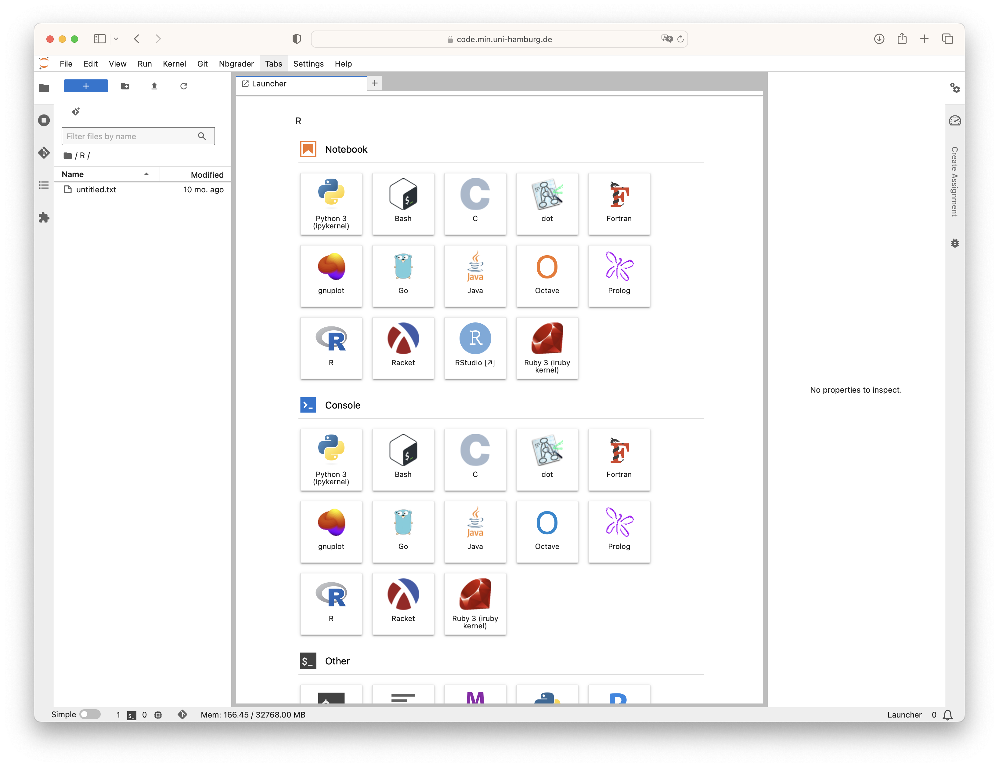

$3 Command Line
Overview
In this session, we will explore the concept of the command line and discover some commands that work well alongside Git.
3.1 Introduction
3.1.1 Prerequisites
If you have stored files on a computer and you are familiar with terms such as “file,” “directory,” or “folder,” you are adequately prepared for this lesson. The goal of this chapter is to teach you enough to be able to use Git from the command line.
To get the most out of this chapter, don’t just passively read – take action! Open your terminal and type the commands as you go along. Feel the power of the command line and witness the results firsthand. By actively typing commands into your terminal, you’ll gain practical experience and a deeper understanding of the material.
3.1.2 Questions
At the end of this chapter, you should be able to answer the following questions:
- What is the shell, command line, or terminal?
- Why would I use the command line?
- Why do I need to know the command line to use Git?
- How do I use the command line?
- Which are basic commands in the command line?
3.1.3 Learning objectives
- Explain when and why command-line interfaces should be used instead of graphical interfaces.
- Understand how to form file paths and navigate directories
- Understand the difference between absolute and relative paths
- Understand how arguments and flags are used to modify command-line commands
- Understand the concept of wild cards (
*)
3.1.4 Why using Git from the command line?
Git is fundamentally a command-line tool. This is why comfort with the command line is essential for learning Git.
3.1.5 General advantages of the command line
- Longevity: The command line has stood the test of time, remaining relevant and widely used even as new technologies emerge.
- Power: The command line is a robust and powerful tool, enabling users to accomplish intricate tasks efficiently.
- Simplicity: With just a few keystrokes or lines of code, the command line empowers users to execute complex tasks effortlessly.
- Task Automation: The shell allows users to automate repetitive tasks, saving time and effort in performing them manually.
- Workflow Integration: Users can seamlessly combine smaller tasks into larger, more potent workflows, enhancing productivity and efficiency.
- Comprehensive Feature Set: The command line interface provides access to the complete range of Git features, offering more extensive functionality compared to graphical user interfaces (GUIs).
- Extensive Online Support: When seeking help or troubleshooting Git-related issues online, you will often find valuable assistance in the form of command line instructions. Platforms like Stack Overflow frequently provide guidance and solutions based on command line usage.
3.2 Terminology
A file is an unit of digital data storage that can contain a variety of information, such as text, images or even programs. It is identified by an unique name and an extension, which indicates the file’s format or type. Files are organized within a file system, allowing users to create, access, modify, and delete them.
A folder is a container used in file systems to store and organize files and other folders. Folders provide a hierarchical structure that allows users to group and manage files, making it easier to locate and navigate through data.
A directory is the more technical term, while folder is a user-friendly term for the same concept. In practice, the two terms are often used interchangeably, and many operating systems have adopted the term “folder”.
The “command-line interface (CLI)” is a text-based way to interact with computer programs. Most people primarily use a Graphical User Interface (GUI) to work with their programs, but historically, text-based interfaces were more common. Often, the GUI can only access a limited set of features available through the CLI and some programs don’t even have a GUI and can only be used through the command line. For many years, the command line was the primary way to interact with computers. Before GUIs like the ones we use today, early computer users communicated with their machines by typing text-based commands. This text-based interaction allowed them to perform various tasks, from running programs to managing files and directories.
“Terminal” is short for “terminal emulator”, which is a program that mimics a physical device called a terminal. Terminals were used to connect to mainframe computers in the early days of computing. The terminal program creates the window with the dark background, light text, and cursor.
A “shell” is a program that provides the command line to your operating system. It allows you to perform various tasks that your operating system offers, such as managing files, running and stopping programs, and changing system settings, all through text commands. When you “open a terminal”, the program initially communicating with the terminal is a shell. There are multiple shell options available for different operating systems, with the most popular one being the “Bourne Again Shell” or “Bash”.
The terms “shell”, “command line”, “command-line interface (CLI)”, and “terminal” are used interchangeably and generally refer to the same thing: a simple window with a dark background and light text, showing a prompt and a blinking cursor. In movies, when people hack into computers, they often type rapidly in this window.
3.3 Finding the command line
This section can you help you finding the command line on your system. Click on the tab for your operating system for detailed information.
You can access your default shell through the Terminal program located within the Utilities folder: There are (at least) three different ways to get there:
- In the Finder, go to
Applications>Utilities>Terminal.app - In the Finder, select the
Gomenu >Utilities>Terminal.app - Activate the Mac
Spotlightsearch function, typeTerminalin the search bar, and press theReturnkey.
You may want to keep Terminal in your Dock to find it more easily.
On a Mac computer running macOS Mojave or earlier versions, the default Unix Shell is Bash. However, for a Mac computer operating on macOS Catalina or later releases, the default Unix Shell is Zsh. Bash and Zsh are both programs, which are command-line interfaces for interacting with an operating system. Zsh is often considered better than Bash for its more advanced features and improved scripting capabilities. It also has extensive community-contributed plugins and themes. However, the change to Zsh was not a drastic shift for most users, since there a few practical differences.
To verify if your machine is configured to use a shell other than Bash, you can type echo $SHELL in your Terminal window. If the output is /bin/bash or a similar path, it means your default shell is set to Bash. This is the most common shell on Unix-based systems, including macOS. If the output is /bin/zsh or a similar path, it means your default shell is set to Zsh. If the output is a different path, it indicates that your shell is configured to use a different shell program. If your machine is configured to use a shell other than Bash, you can switch to Bash by opening a terminal and typing bash.
Which macOS version do I have installed?
- In the upper-left corner of your screen, click on the logo.
- Select “About This Mac”: A dropdown menu will appear. Choose “About This Mac”.
- View macOS Version: In the “About This Mac” window, you will see information about your Mac, including the macOS version. The version number will be listed under the “Overview” tab. For example, it might say “macOS Big Sur” or “macOS Monterey”, along with the version number (e.g., “Version 11.4”).
By default, Windows operating systems do not come with a pre-installed Unix Shell program. In this guide, we recommend using an emulator provided by Git for Windows, which grants you access to both Bash shell commands and Git.
For an installation guide, you can check out the chapter on installation and setup. Once you have installed Git for Windows, you can easily open a terminal by launching the program called Git Bash from the Windows start menu.
Open a fresh Terminal.
If it is not possible for you to access a command line interface using your personal computer, you can use a remote solution with JupyterHub. JupyterHub is a web-based platform that allows multiple users to access an interactive computing environment on a shared server.
You can access a remote environment, using your Universität Hamburg login credentials here. Simply click on the link and log in.
Once you are logged in, you should be able to view the remote environment and create files using different programs like , Python or Java .

If you scroll down in the “launcher” window, there should be the option to open a terminal window. Your remote environment will be mostly empty, but you can move around and manage files just like you could on your own computer.
3.4 Opening the command line
When you open the shell, you’ll see a prompt that tells you the shell is ready for input. Your terminal interface will usually show a message similar to the following prompt:
In the shell, the prompt is usually represented by the symbol $ but it can be different sometimes. In our examples, we’ll use $ as the prompt. The important thing to remember is to not type the prompt, $, itself when entering commands. Only type the command that comes after the $ prompt. For this reason, we remove the $ prompt from all code examples in this guide. Also, remember to press the Enter key after typing a command to execute it.
After the prompt, you’ll see a text cursor that shows where you can type. The cursor can be a flashing or solid block, or it can be an underscore or a pipe symbol. You may have seen a similar cursor in a text editing program.
Keep in mind that your prompt may look slightly different. Usually, in popular shell environments, your username and the host name appear before the $ symbol. For example, your prompt might look like this:
wittkuhn@lip-osx-005509:~$3.6 List files and folders
The ls command is used to list the files and folders in a specified directory or the current working directory. If you run this command, you will see the contents of your current working directory.
lsClick here to see the output of this command executed in the project directory of this guide.
LICENSE
Makefile
README.md
_affiliations.yml
_authors.yml
_book
_extensions
_quarto.yml
_variables.yml
acknowledgements.qmd
chapters
cheatsheet.json
chicago-author-date-note.csl
contents-listing.json
contents.html
contents.qmd
functions.R
index.html
index.qmd
plausible.html
references.bib
references.qmd
renv
renv.lock
site_libs
static
version-control-book.RprojHowever, the ls command provides various options, such as flags and arguments, to enhance its functionality beyond simple file listing. To provide additional instructions to a command, we can pass flags and arguments by typing them after the command name.
3.6.1 List files in a specific directory
For example, we can list the contents of the /chapters folder in the project directory of this guide:
ls chaptersClick here to see the output of this command executed in the project directory of this guide.
branches.qmd
command-line.qmd
command-line.rmarkdown
contributing.qmd
datalad-nextcloud.qmd
first-steps-git.qmd
github-intro.qmd
installation-setup.qmd
intro-version-control.html
intro-version-control.qmd
rewriting-history.qmd
stashing-rebasing.qmd
style-guide.qmd
summary.qmdIn this case, chapters is an argument to the ls command.
3.6.3 Interlude: What is the difference between a flag and an argument?
3.6.3.1 Overview
The difference between a flag and an argument is that a flag is used to modify the behavior of a command, while an argument provides additional input or information to the command.
3.6.3.2 What is a flag?
A flag is typically a single character or a combination of characters preceded by a hyphen (-) or double hyphen (--). It is used to enable or disable specific options or features of a command. Flags are optional and are used to customize the behavior of the command.
3.6.3.3 What is an argument?
An argument is the actual input or information that is passed to a command to perform a specific action. It can be a value, a file name, a directory path, or any other data required by the command to complete its task. Arguments are often positioned after the command and any flags, and they can be mandatory or optional depending on the command’s requirements.
3.6.3.4 Multiple single-letter flags
You can combine multiple single-letter flags by using a single dash. For example, to instruct the ls command to list all files (including hidden files) in a long format that is easy to read for humans, you can use the following combination of flags:
ls -alhClick here to see the output of this command executed in the project directory of this guide.
total 276K
drwxr-xr-x 11 runner docker 4.0K Oct 26 13:51 .
drwxr-xr-x 3 runner docker 4.0K Oct 26 13:36 ..
-rw-r--r-- 1 runner docker 36 Oct 26 13:37 .Renviron
-rw-r--r-- 1 runner docker 48 Oct 26 13:37 .Rprofile
-rw-r--r-- 1 runner docker 1.6K Oct 26 13:37 .all-contributorsrc
-rw-r--r-- 1 runner docker 76 Oct 26 13:37 .codespellrc
drwxr-xr-x 8 runner docker 4.0K Oct 26 13:51 .git
drwxr-xr-x 3 runner docker 4.0K Oct 26 13:37 .github
-rw-r--r-- 1 runner docker 67 Oct 26 13:37 .gitignore
drwxr-xr-x 7 runner docker 4.0K Oct 26 13:51 .quarto
-rw-r--r-- 1 runner docker 20K Oct 26 13:37 LICENSE
-rw-r--r-- 1 runner docker 582 Oct 26 13:37 Makefile
-rw-r--r-- 1 runner docker 4.1K Oct 26 13:37 README.md
-rw-r--r-- 1 runner docker 3.1K Oct 26 13:37 _affiliations.yml
-rw-r--r-- 1 runner docker 1.1K Oct 26 13:37 _authors.yml
drwxr-xr-x 2 runner docker 4.0K Oct 26 13:51 _book
drwxr-xr-x 3 runner docker 4.0K Oct 26 13:37 _extensions
-rw-r--r-- 1 runner docker 3.3K Oct 26 13:37 _quarto.yml
-rw-r--r-- 1 runner docker 591 Oct 26 13:37 _variables.yml
-rw-r--r-- 1 runner docker 2.5K Oct 26 13:37 acknowledgements.qmd
drwxr-xr-x 2 runner docker 4.0K Oct 26 13:51 chapters
-rw-r--r-- 1 runner docker 2.7K Oct 26 13:37 cheatsheet.json
-rw-r--r-- 1 runner docker 23K Oct 26 13:37 chicago-author-date-note.csl
-rw-r--r-- 1 runner docker 493 Oct 26 13:51 contents-listing.json
-rw-r--r-- 1 runner docker 41K Oct 26 13:51 contents.html
-rw-r--r-- 1 runner docker 774 Oct 26 13:37 contents.qmd
-rw-r--r-- 1 runner docker 1.8K Oct 26 13:37 functions.R
-rw-r--r-- 1 runner docker 29K Oct 26 13:51 index.html
-rw-r--r-- 1 runner docker 194 Oct 26 13:37 index.qmd
-rw-r--r-- 1 runner docker 118 Oct 26 13:37 plausible.html
-rw-r--r-- 1 runner docker 11K Oct 26 13:37 references.bib
-rw-r--r-- 1 runner docker 116 Oct 26 13:37 references.qmd
drwxr-xr-x 4 runner docker 4.0K Oct 26 13:39 renv
-rw-r--r-- 1 runner docker 16K Oct 26 13:37 renv.lock
drwxr-xr-x 9 runner docker 4.0K Oct 26 13:51 site_libs
drwxr-xr-x 2 runner docker 4.0K Oct 26 13:51 static
-rw-r--r-- 1 runner docker 211 Oct 26 13:37 version-control-book.Rproj3.6.3.5 The --help flag
If you want to know what flags and arguments a command supports, most commands provide usage information when you use the flag --help. In some cases, the flag -h can also be used to achieve the same result.
3.7 Manipulating the file system
The command line offers commands for creating, moving, and deleting folders and files.
3.7.1 Creating a folder
Let’s use the command line to create a new project folder as an example: To make a directory, we’ll use the mkdir command.
Note: When creating new directories, consider their location carefully. Consider deleting the newly created directories afterwards to avoid clutter.
The path of the directory we want to create is given as an argument to the command. If we want to create a directory in the current folder, we just need to use its name, as the path is assumed to be relative.
mkdir my-projectMake sure the project folder is present by using the ls command, and then move into it by using the cd command.
ls
cd my-project3.7.2 Creating multiple folders
Next, we will proceed to create multiple additional folders within the my-project project folder. The mkdir command allows us to create multiple directories simultaneously by providing multiple arguments, each representing a separate folder. For example, for a data analysis project we might create the following three folders:
mkdir data results scripts3.7.3 Creating files
Let’s create some files in the my-project project folder. To do this, you can use your favorite text editor or the command line. In the command line, you can use the touch command to create a new empty file. The file doesn’t need to contain anything. For example, to create an empty file called file.txt, we can use the following command:
touch file.txt3.7.4 Moving folders and files
Let’s say we want to move the file.txt file to the /scripts folder. We can use the mv command to move files and folders. The mv command requires two arguments: the first is the files or folders to be moved, and the second is the path where they should be moved. To move the file.txt file, the command would look like this:
mv file.txt scripts3.7.5 Renaming files and folders
Suppose we don’t like the folder name scripts because file.txt is actually a documentation file, not a script. We can use the mv command to rename files and folders by moving them to a different location in the file system, for example docs, like this:
mv scripts docs3.7.6 Wildcards
Now, let’s learn how to use wildcards to perform actions on multiple files or folders at the same time. A wildcard is denoted by the symbol *, and it helps us select file system arguments that match certain patterns. For example, suppose we wish to display a list of all files of a certain file type (here, all files with the .yml file extension) in the current directory:
ls -alh *.ymlClick here to see the output of this command executed in the project directory of this guide.
-rw-r--r-- 1 runner docker 3.1K Oct 26 13:37 _affiliations.yml
-rw-r--r-- 1 runner docker 1.1K Oct 26 13:37 _authors.yml
-rw-r--r-- 1 runner docker 3.3K Oct 26 13:37 _quarto.yml
-rw-r--r-- 1 runner docker 591 Oct 26 13:37 _variables.ymlBy using the wildcard *, we can generate a list of all files ending with .yml. Similarly, we can apply the wildcard at the end of a path to match items starting with a specific letter, such as folders beginning with i:
ls -alh i*Click here to see the output of this command executed in the project directory of this guide.
-rw-r--r-- 1 runner docker 29K Oct 26 13:51 index.html
-rw-r--r-- 1 runner docker 194 Oct 26 13:37 index.qmd3.7.7 Removing files and folders
To delete files and folders, you can use the rm command. Provide the path of the files or folders that you want to delete as the argument. However, if you want to remove a folder, you need to include the -r (or --recursive) flag.
For example, to remove the docs folder, you would use the following command:
rm -r docsWarning: When you use the rm command to delete files, they are removed entirely(!) from your system and cannot be retrieved from a “Recycle Bin” or “Trash” as when you delete files using GUIs.
3.8 Summary
In this lesson, we have achieved the following:
- Simplified and clarified some of the technical terms associated with the command line.
- Explored the components of command-line commands: paths, arguments, and flags.
- Gained knowledge about relative and absolute paths, including convenient shortcuts like
~,.and... - Witnessed the functionality of wildcards.
- Acquired familiarity with several essential shell commands.
It’s important to note that what we covered here only scratches the surface of what can be accomplished using the shell. The primary aim was to provide useful concepts that help when learning Git. If you’re interested in delving deeper, you may find a more comprehensive introduction at one of the following resource.

3.9 Acknowledgements & further reading
We would like to express our gratitude to the following resources, which have been essential in shaping this chapter. We recommend these references for further reading:
| Authors | Title | Website | License | Source |
|---|---|---|---|---|
| Millman et al. (2018) | Teaching Computational Reproducibility for Neuroimaging | CC BY 4.0. Website: | ||
| Milligan and Baker (2014) | Introduction to the Bash Command Line | NA | NA | NA |
| McBain (2019) | Git for Scientists | CC BY-SA 4.0 | ||
| Capes et al. (2023) | swcarpentry/shell-novice: Software Carpentry: the UNIX shell | CC BY 4.0 |
3.10 Cheatsheet
| Command | Description |
|---|---|
pwd |
Display the current directory path |
cd <PATH> |
Change the current working directory to <PATH> |
cd ~ |
Change the current working directory to the user’s home directory |
cd .. |
Move up one folder |
cd ../.. |
Move up two folders |
ls |
List files and folders in the current working directory |
ls <PATH> |
List files and folders in <PATH> |
ls -a |
List all files (including hidden files) in the current working directory |
ls -alh |
List all files in a long format that is easy to read for humans |
mkdir <FOLDER> |
Create a new folder, called <FOLDER> |
mkdir <FOLDER1> <FOLDER2> |
Create two separate folders, called |
touch <FILE> |
Create a new empty file, called <FILE> |
mv FILE.txt <FOLDER> |
Move FILE.txt into <FOLDER> |
mv <FOLDER_OLD> <FOLDER_NEW> |
Rename <FOLDER_OLD> to <FOLDER_NEW> |
ls -alh *.csv |
Use a wildcard to list all .csv files |
rm -r <FOLDER> |
Remove the folder <FOLDER> |